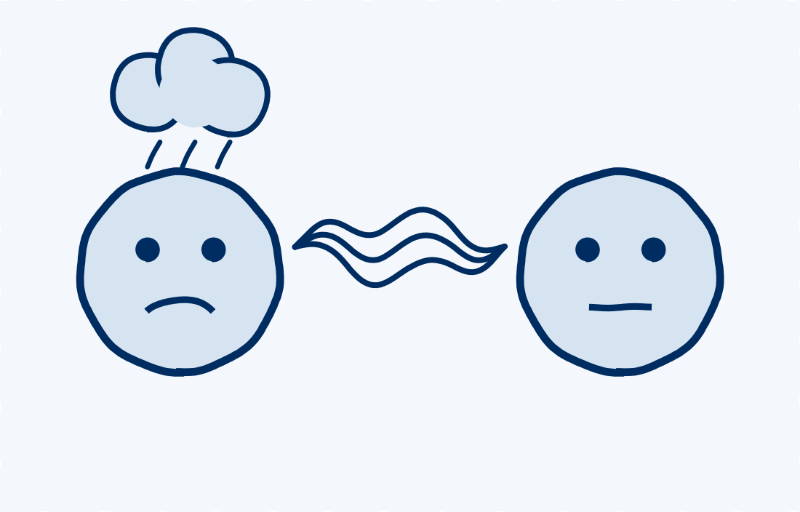
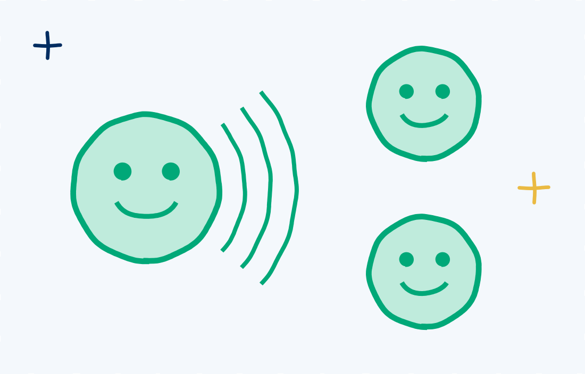
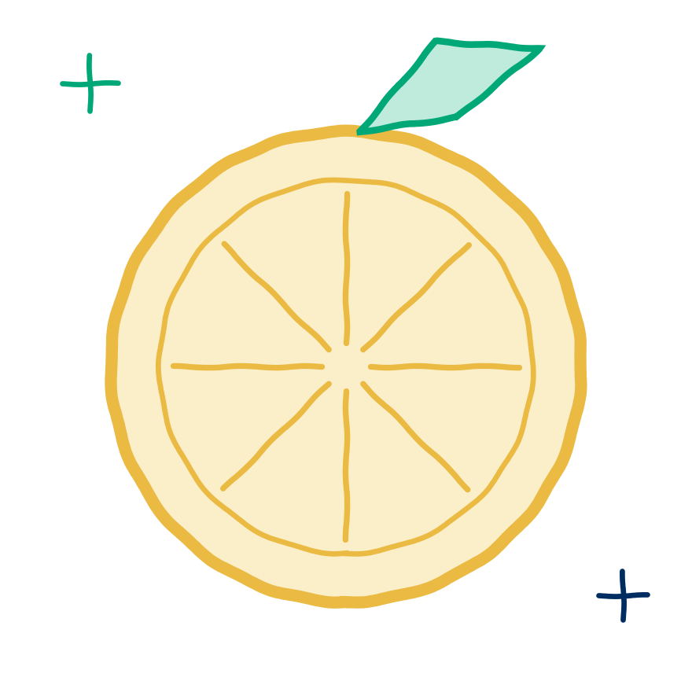

TalentSmartEQ Research
Are Emotions Contagious?

Short answer: yes. Moods spread from person to person, often without anyone noticing. The good news is that you have an immune system.
What’s going around

The coldRudeness spreads. People who dealt with a rude partner were more likely to be rude to the next person they worked with, even a week later. One rude moment was enough, and anyone could be a carrier.
Foulk, Woolum & Erez, 2016, Journal of Applied Psychology
The good stuffGood moods spread too. When one team member brought a positive mood, the rest of the group caught it: more cooperation, less conflict and better performance. Happiness can travel through a social network up to three people away.
Barsade, 2002, Administrative Science Quarterly; Fowler & Christakis, 2008, BMJDo people notice when they’ve caught something?
- Never <1%
- Rarely 2%
- Sometimes 12%
- Often 30%
- Almost Always 39%
- Always 17%
That leaves 44% who catch moods without always noticing. And people are better at spotting feelings in others than in themselves: 68% say they always or almost always recognize other people’s feelings.
Your vitamin C

Gratitude spreads, too, but not like a cold. New research finds that when leaders say thank you, their teams start paying attention to what coworkers do for them, thank each other more and build stronger relationships. It spreads through what people pay attention to, which means you get a say in it.
Locklear, Kane & Ehrhart, 2026, Journal of Applied PsychologyAre you catching a cold, or taking your vitamin C?
- When your mood shifts, ask: is this mine, or did I catch it?
- Who are you catching moods from today, and who is catching yours?
- Take your vitamin C: notice one thing someone did for you, and say thanks.
TalentSmartEQ data: 729,497 Emotional Intelligence Appraisal self-assessments, 2021–2026. Items: “Realize when others influence your emotional state” and “Recognize other people’s feelings.”
Foulk, T., Woolum, A., & Erez, A. (2016). Catching rudeness is like catching a cold. Journal of Applied Psychology, 101(1), 50–67. doi.org/10.1037/apl0000037
Barsade, S. G. (2002). The ripple effect: Emotional contagion and its influence on group behavior. Administrative Science Quarterly, 47(4), 644–675. doi.org/10.2307/3094912
Fowler, J. H., & Christakis, N. A. (2008). Dynamic spread of happiness in a large social network. BMJ, 337, a2338. doi.org/10.1136/bmj.a2338
Locklear, L. R., Kane, M. E., & Ehrhart, M. G. (2026). Grateful leaders and attentive followers. Journal of Applied Psychology. doi.org/10.1037/apl0001398
Copyright 2026 © TalentSmart Inc. All rights reserved.